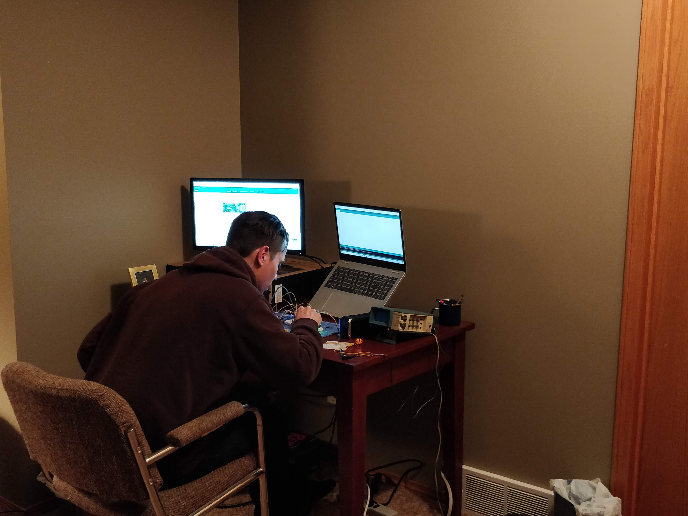
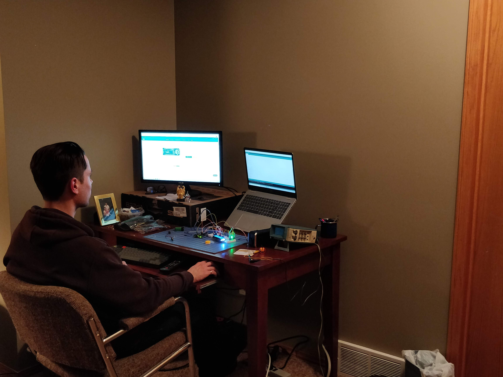

Arduino Projects
December, 2020
Check out my Skillshare class on Arduino work.
One of my electives for school is a microcontroller class. It uses Arduino Uno board. I ordered the Arduino kit after I picked the class and before the lectures started.
It took a few weeks for the first lecture to be posted. Once it was posted I cracked open the Arduino kit and completed the task. It was a simple LED with a resistor.
The second task had three LED lights to create a traffic light sequence. It was pretty cool. After a few weeks a third one was posted. With the online nature of the semester
it seems like a lot of things take awhile to get posted. But the third lecture was an LCD screen task. I actually delayed in doing the task for awhile. I knew I would have a lot
of time since the next lecture would take awhile to get posted. I finally did the task and got the LCD screen to work.
After I finished the LCD task I thought I should keep going and started to search my own projects to do with what came with the kit. First I got a servo motor to
work. That one was pretty easy, it didn't even need the bread board just had to hook up the leads from the Arduino board direct to the servo motor.
The next project I did was to get a DC motor to run. I hooked up the circuit and everything looked right but it didn't run. But after some trouble shooting I found
The functions were commented out on the code that I found. There is four functions that you can comment and uncomment them when you want to use them and they all have different outputs.
So that was cool to get the motor to work since any practical project will most likely have some sort of motor.
Then I got the stepper motor to work as well. It comes with an external board that the stepper motor plugs into this board then you hook up this board to the Arduino board.
The code for this motor and the servo motor are built in examples in the IDE so it is really easy to use. The DC motor code I found on the blog I found the circuit.
The finally I started on a new project. I started to search how to make a tachometer. First some had smaller microcontrollers but then changed it to be using the Arduino Uno board.
So I found a few using the Arduino Uno and one used the OLED smaller screen and a Hall sensor but I didn't have those hardware pieces. I found one tutorial that used a infrared sensor which
I had in the kit. So I got it all wired up and it didn't work, of course.
I had to troubleshoot through a lot of problems on this project actually. At first nothing was printing to the screen at all I then remembered the LCD task from the class used a potentiometer
to adjust the contrast. That worked and could adjust it to show on the screen. Then I tried to wave over the infrared receiver or put something spinninng over it but it didn't work.
I found a Infrared LED bulb I then wired it up with a regular LED bulb in series to be able to tell if it is working which worked great. Then I got a signal from the infrared receiver(there is built in LED to indicate when it's fired).
Oh then I hooked up an old oscilloscope that was just in the house. I could prove that the voltage changed from the output of the infrared receiver when the triggered. That was very cool to be able to prove that it worked.
After this I found out that the hardware used in the tutorial and other homemade tachometer builds use an infrared sensor module that has the emitter and the receiver built in and it is triggered when something is in front of it.
With the code you can calculate the RPM from something spinning in front of this sensor. The sensor isn't much different than my set up but it has an Op Amp and a few resisters so it seems to work good the way it is built.
I think if I want to build one to actually use I will buy this sensor module for the ease of it.
One last problem I confronted was that the screen still didn't read out an RPM even if the sensor was triggered which I figured wouldn't get fixed with the sensor module and it had to be in the code.
I troubleshooted through the code quite a bit and tried to get it to print a response on the screen to indicate when the sensor was triggered and that worked. I finally figured it out while I was driving later in the day.
There was a function in the code that uses a for loop to loop up to 1000 to indicate when the signal is triggered but it was a nested for loop which looked quite fishy. I got rid of the nested loop and used a single for loop and
it worked!
How I finished it is that when it is turned on the screen says to press the button to start. The button is pressed then it is waiting for the signal to be triggered. So you can wave the LED infered emitter or even use the TV remote to fire an
infrared signal and then it outputs an RPM. It is just a random RPM since it was just fired once or twice.
I like I said if I decide to build this to actually use it I will buy the dedicated infrared sensor module along with other dedicated parts for the build.


